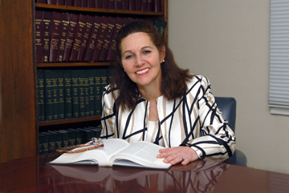

CAREN Z. SCHINDEL, Esq. has been a principal with the firm since 2008. Prior to joining the firm she was the owner of the Law Offices of Caren Z. Schindel in Framingham, MA. Attorney Schindel graduated from Buffalo Law School in 1982. In 2004, she went back to law school to obtain a Masters' degree in Taxation, and in 2009 she graduated from Boston University Law School with an LLM in taxation.
She is a member of the Massachusetts Bar Association Family Law and Probate Section, the Women's Bar Association, Senior Practice Committee, the Boston Estate Planning Council (BEPC) and the National Association of Elder Law Attorneys (NAELA). Attorney Schindel is a frequent speaker on topics related to elder, estate planning and domestic relations law. Each year, she prepares income tax returns for low income seniors through the AARP Volunteer Income Tax Advocate (VITA) program.
What sets Attorney Schindel apart from other attorneys is her desire to help families handle the most emotionally complex, conflict ridden situations. She is able to use her undergraduate degree in psychology, her master's in tax law and her understanding of legal and financial issues to resolve complicated family problems. With thirty years of experience as a family law and probate attorney, she is able to help clients through the process of divorce. She also handles post-divorce issues such as revising parenting plans, increasing and decreasing support and alimony obligations and allocating college costs.
Another family journey Attorney Schindel handles is establishing plans for transferring assets from the older generation to the younger generation. This process involves elder law, tax planning, government benefits planning and document preparation. Attorney Schindel's ability to facilitate a family consensus allows her to help families discuss options and select the most beneficial plan. If court involvement is required, Attorney Schindel handles all probate matters, including guardianships, conservatorships and probate litigation. When tax issues arise, Attorney Schindel works to resolve the issues with the IRS, DOR or other taxing authority.
Patience, attention to detail and a zealous pursuit of her client's goals ensure successful results for Attorney Schindel's clients.
{% endblock %}